Découvrez
EUROPE DE L'OUEST
10 jours - 3400 km - Débutant

Découvrez
10 jours - 3400 km - Débutant
Sud de la France, mer méditerranée, yachts, milliardaires, … on a déjà vu pire pour un départ de road trip.
Suivre le circuit de formule en voiture peut vous sembler inutile, mais vous découvrirez pleins de petits cafés et d'hôtels bien sympathiques.
Avril 2017
Un vrai show de moteurs, de richesses, de bling bling, ici on admire tout simplement . 80 véhicules, 25 supercar, 5 superboat, 12 grandes marques de montres..
Vous avez tout de même fait 700km (dont la quasi totalité sur autoroutes) si vous n’avez pas voulu vous arrêtez pour profiter de la magnifique côte méditerranéenne ce n’est pas grave car vous pourrez vous rattraper en admirant la ville de votre première étape : Rome !
Il y a tellement d'événements auxquels participer , d’endroits à visiter, de plats à goûter, de personnes à rencontrer, en deux jours vous n’aurez pas le temps de tout apprendre de Rome … il nous a été dur de choisir un endroit de préférence , mais nous avons choisi le lieu le plus important à nos yeux qui mérite d’être vu au moins une fois dans sa vie : le Colisée de Rome.

7 février 2017
Le carnaval qui était jadis l’un des plus grands du monde existe toujours à Rome, bataille de confetti et bouquets, course des chevaux libres, et la bataille de bougies seront de la partie !
250 km est la distance que vous avez à parcourir pour aller de Rome à Naples, au choix : autoroutes ou routes simples, si vous choisissez de suivre les routes (départementales, …) accrochez vous car la vous allez traversez un paysage extrêmement vallonnée, mais vraiment superbe à admirer .
Parlons de pizza , Naples est LA capitale mondiale des pizzas, les pizzerias affichent souvent complet, et il vous faudra faire la queue pendant des heures pour goûter une des meilleures pizzas au monde, mais cherchez plutôt la pizzeria “Ettore” … on vous laisse dégustez .
septembre 2017
La plus importante fête religieuse de la ville (grand défilé à travers les rues de Naples)
1 000 km , oui oui vous avez bien lu : 1 000 km, c’est la distance que nous vous proposons : 1 000 km à travers les paysages vallonnées d’Italie, à travers les forêts d’Autriche, sur les autoroutes allemandes, si vous êtes fan de nature brut, arrêtez vous n’importe quand : le paysage est juste à couper le souffle!
Vous avez traversé un pays: l’Autriche, il est maintenant temps pour vous de se détendre avec une ballade à la Marienplatz, place central à Munich, elle allie aussi bien les nouveaux quartiers que les anciens, véritable lieu historique, on vous laisse ouvrir grandes vos oreilles afin d’entendre un certain carillon vieux de plus de 100 ans.
15 avril 2017
C'est un peu les « journées du patrimoine » à la sauce napolitaine. La ville fête ses musées et ses monuments pendant un mois en offrant, dans la plupart des lieux, une libre entrée.
Pour la fin de votre voyage, nous vous conseillons d’emprunter l'autoroute A3 allemande (et sa vitesse illimitée) si vous n’avez jamais testé une autoroute allemande c’est l’occasion de voir plein de voiture de sport roulez à toutes vitesse, par contre le rythme va extrêmement ralentir arrivez au Pays Bas, les petites routes seront légions admirez le magnifique paysage est un très bon moyen de faire passer le temps en voiture.
Vous venez ainsi de traverser l’Allemagne de sud vers le nord, après ce (très) long périple, une balade en barque sur un des nombreux canaux d’amsterdam le Prinsengracht vous reposera aussi bien l’esprit que les yeux.
4-8 Mars 2017
5 jours de festival électro dans une ville dynamique , on vous laisse imaginer ce que cela peut donner.
Encore une fois vous devrez faire face au petites routes des Pays-Bas mais une fois extirpés de ces routes, un autoroute belge vous attend, il faut savoir que la nuit les autoroutes belges sont éclairés, si vous êtes fan de nouvelles expériences nous vous encourageons à donc rouler la nuit.
Vous voilà arrivés à destination ! rendez hommage à votre voyage en essayant de trouver les drapeaux des pays que vous venez de traverser au parlement européen, véritable centre politique européen,c’est un bâtiment qui représentent tout de même 492 millions de citoyens et donc mérite le coup d’oeil !
6-15 Aout 2017
Concerts de groupes de renommée internationale.
 Que mettre dans mon sac à dos?
Que mettre dans mon sac à dos?
 Plannifier son voyage
Plannifier son voyage
 Les meilleurs arrets 2016
Les meilleurs arrets 2016
Imac 2 Copyright © Imac 2